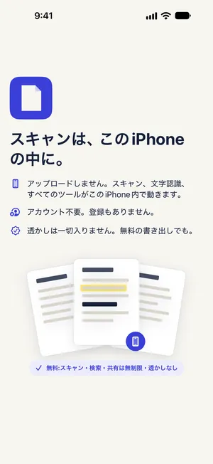

身分証のPDFにパスワードをかけて送る方法（iPhone）
最終更新 2026-10-22 · Paperkeep Pro の機能
身分証のコピーをそのままメールに添付すると、そのメールを開ける人なら誰でもファイルも開けます。Paperkeep Proは書き出すときにPDFへパスワードをかけ、パスワードを知っている人だけが開けるコピーを作ります。Paperkeep内の書類はロックされないので、検索やプレビューはこれまでどおり使えます。
まずは iOS の標準機能でやる方法
- iOSの「ファイル」Appや「メモ」Appには、PDFファイルそのものにパスワードをかけるメニューはありません。
- 「メモ」Appでメモをロックすれば、このiPhoneのメモの中では守られますが、そのスキャンを共有して外に出したファイルにはパスワードが付きません。
- 標準Appだけでは、受け取った側が開くときにパスワードを求めるPDFは作れません。
Paperkeep でやる方法
- 一覧で身分証の書類をタップして開き、右上の「ツール」メニューから「書き出す…」に進みます。
- 「形式」が「PDF」になっている状態で、「パスワード」のスイッチをオンにします。
- 4文字以上のパスワードを入力します。Paperkeepはこのパスワードを保存しないので、控えておきましょう。
- 「共有」をタップしてメールを選ぶと、パスワード付きPDFが添付されます。ファイルとして残すなら「ファイルに保存」を。

この書類ならではのコツ
- パスワードはPDFを送ったメールとは別の手段（電話やメッセージ）で伝えましょう。同じメールに書くと意味がありません。
- 誕生日や電話番号など、身分証に載っている情報をパスワードにするのは避けましょう。
- 相手が受け取ったら、送信済みメールの添付を残しておくかどうかも見直すと安心です。
まもなく App Store で公開します。